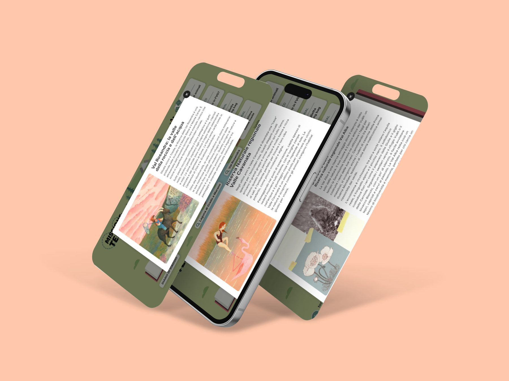
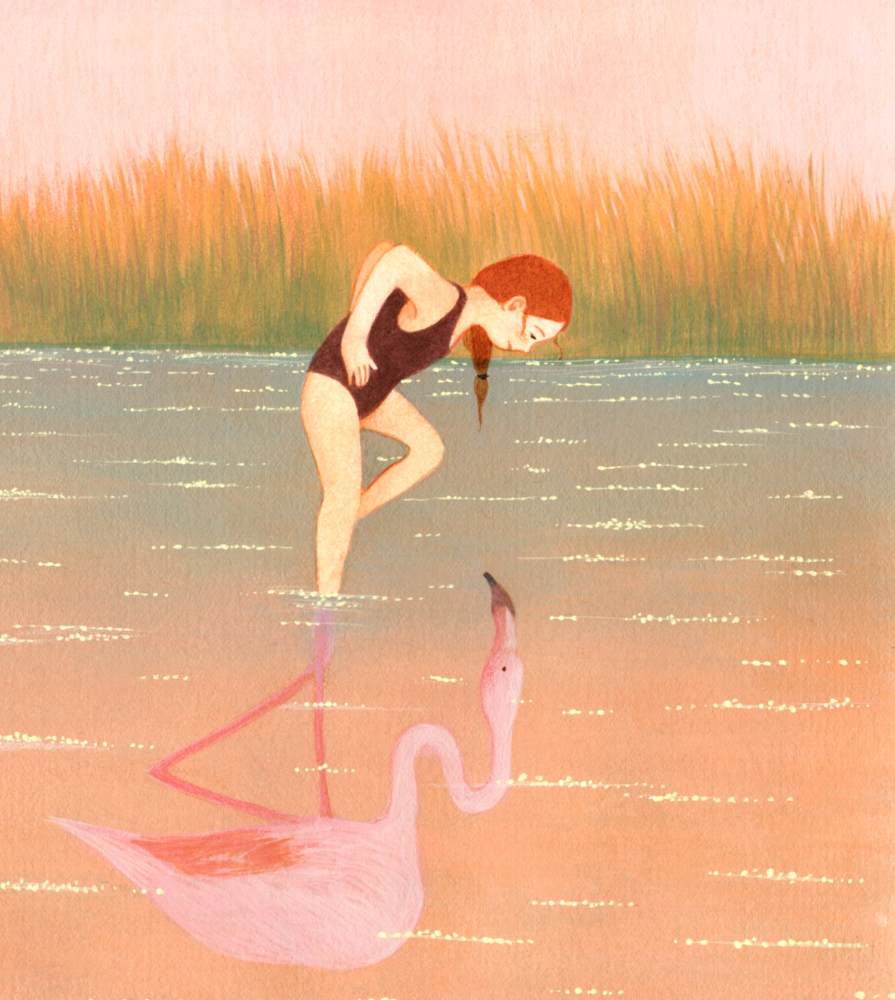
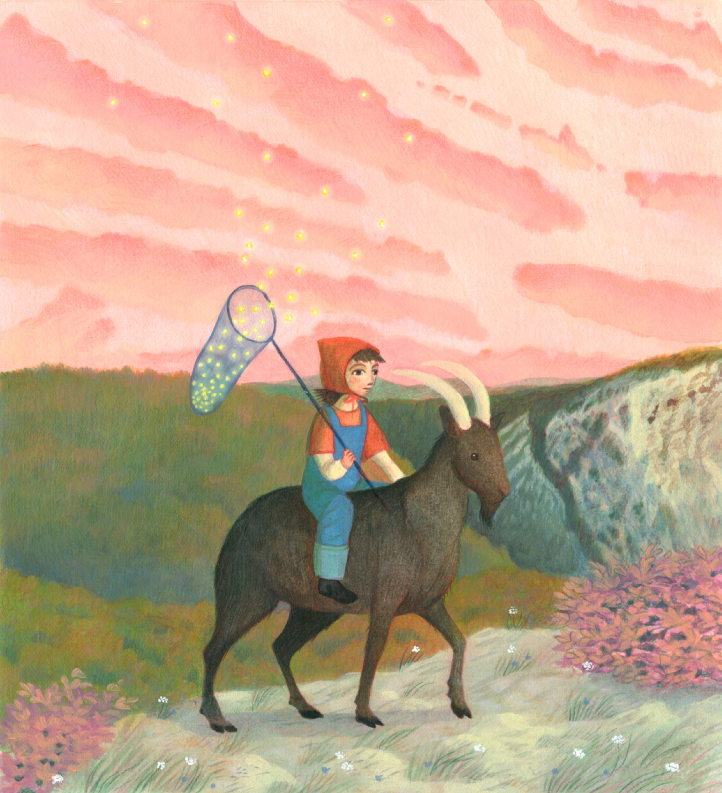
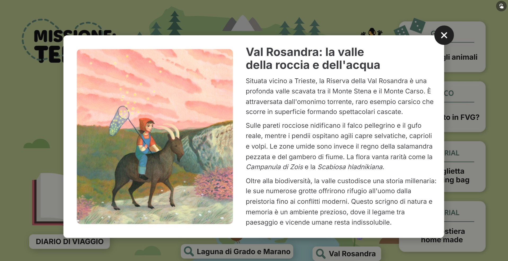
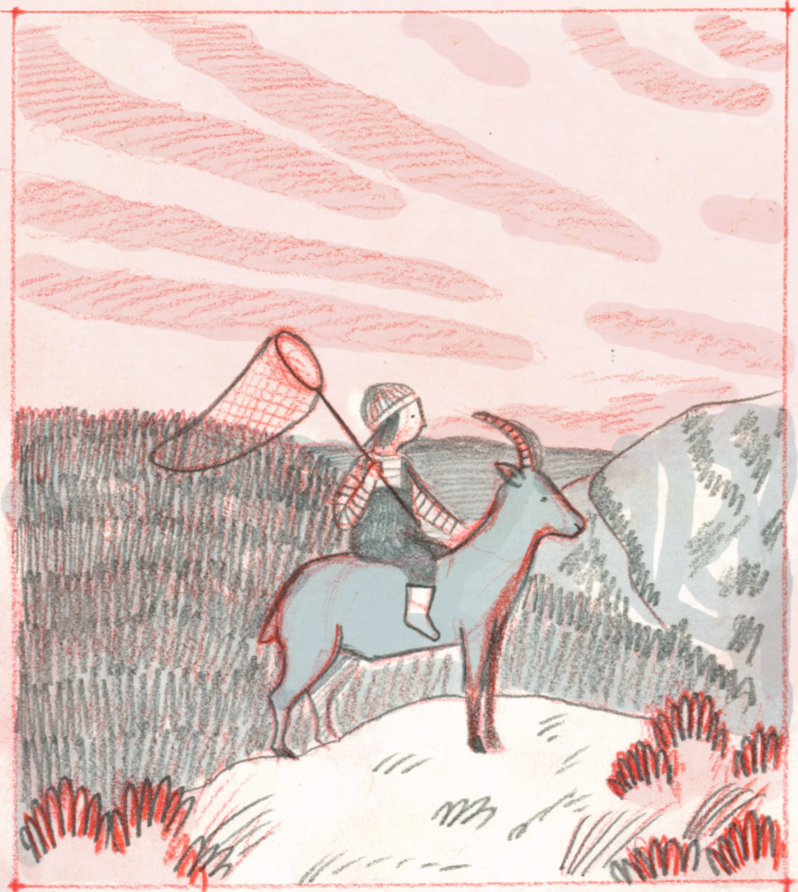
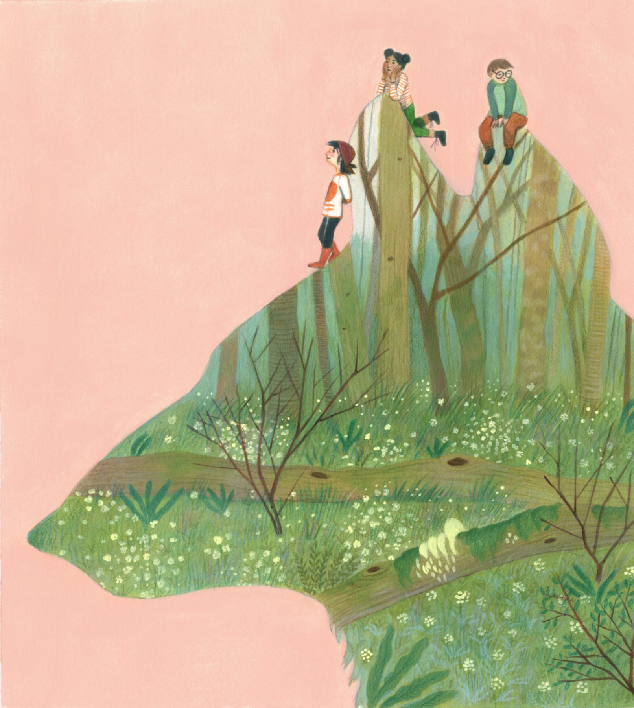
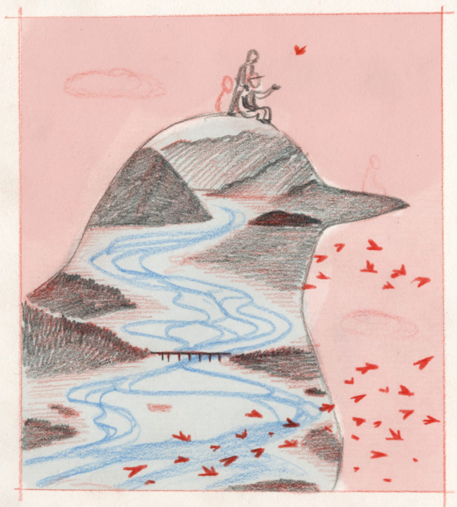

Serie di illustrazioni dedicate al territorio del Friuli-Venezia Giulia, create per "Missione Terra", l'app di divulgazione didattica di Confcooperative FVG, nell'ambito di un progetto di educazione ambientale e sociale rivolto alle scuole. I protagonisti sono bambini che giocano, esplorano e vivono attivamente il territorio e la sua biodiversità.





